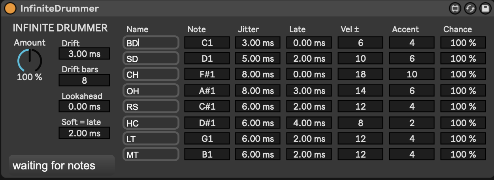

Tight electronic
Barely there. Enough to stop the machine sounding like a machine.
- Amount
- 60 %
- Drift
- 0 ms
- Soft = late
- 0 ms
- Jitter
- 2–4 ms, every row
Max for Live · MIDI effect · Ableton Live → Roland TR-8S · free
Infinite Drummer sits between your Live drum clip and the TR-8S and nudges every hit. Each instrument gets its own timing, velocity and chance on one panel, so the hats can be loose and the kick can stay tight. Kit-wide drift, grid accents and the drag of a soft note do the rest.

What it does
A drummer does not quantise. Hats wander a few milliseconds, the snare lays back, ghost notes arrive late and quiet. Below is two bars of a kick, snare and closed hat pattern as Live sends it, then as the device passes it on with the default settings. Re-rolled every bar, like the real thing.
Signal path
Drop it on the MIDI track that feeds the drum machine. Notes that match no row pass through untouched. CC, pitch bend, pressure and program changes go straight through. Note-offs follow their note-on by exactly the same delay, and a hit dropped by Chance drops its note-off too, so it is equally safe in front of a Drum Rack.
Controls
Incoming notes are matched against the eight rows by MIDI note. Everything a matched hit gets is listed here, with the defaults you saw in the screenshot. Timing is in milliseconds, velocity in MIDI steps.
| Control | Scope | What it does |
|---|---|---|
| Name | per row | A label so you can tell the hats from the snare. Click, type, press Enter. Defaults to the TR-8S abbreviations and is saved with the Live set. |
| Note | per row | Which MIDI note this row catches. Defaults are the TR-8S map: BD 36 SD 38 CH 42 OH 46 RS 37 HC 39 LT 43 MT 47. |
| Jitter | per row | Random timing, ± this many ms. Hats want more than kicks: the defaults run from 3 ms on the kick to 8 ms on the hats. |
| Late | per row | Fixed timing bias in ms. Positive lays back, negative pushes. Negative values need Lookahead. |
| Vel ± | per row | Random velocity spread in MIDI steps. |
| Accent | per row | Velocity shaping by grid position. Hits on the beat get +Accent, the "&" gets a quarter of it, the "e" and "a" lose half. The bar's downbeat gets an extra half. |
| Chance | per row | Probability the hit plays at all. Made for ghost notes and busy hat patterns. |
| Amount | whole kit | Scales every timing and velocity deviation from 0 % to 200 %. This is the performance knob: map it to a controller and ride it. Chance is not scaled. |
| Drift | whole kit | A slow push and drag of the whole kit, ± this many ms, following a sine that loops every Drift bars bars of song position. |
| Lookahead | whole kit | Delays everything by this much so rows can be early. Compensate with the track's Track Delay set to −Lookahead ms. |
| Soft = late | whole kit | Soft hits land up to this many ms late, hard hits equally early. Ghost notes drag, rimshots dig in. |
Starting points
Barely there. Enough to stop the machine sounding like a machine.
The defaults. A drummer who has had one coffee and is listening to the bass player.
Map Amount to a fader and push it past 100 % for the last chorus.
Install
Every push builds the device on GitHub Actions. Open the latest run and download the InfiniteDrummer artifact, which holds the .amxd, the .js engine and the .maxpat. Or build it yourself:
# in the repo python3 device/build_amxd.py # writes device/InfiniteDrummer.amxd
Drag InfiniteDrummer.amxd onto the MIDI track that feeds the TR-8S, before the External Instrument, or as the last MIDI effect if you use the track's MIDI To routing.
Keep the .amxd next to infinite-drummer.js. An unfrozen device finds its engine by looking beside itself. If you want a single file to hand around, open the device in Max and freeze it.
Check that the TR-8S is responding to MIDI velocity under System → MIDI settings. If every hit is full volume, the velocity work is invisible.
If you use negative Late values, set Lookahead to cover them and put −Lookahead ms in the track's Track Delay so the kit stays on the grid.